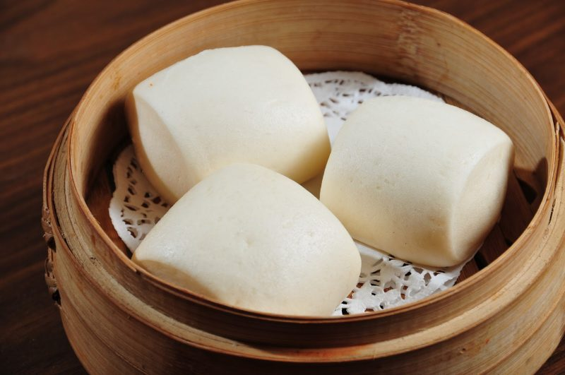

Mantou is a plain steamed bun with no filling and is considered one of the most popular foods in Chinese cuisine. It is traditionally made with wheat flour, all-purpose flour, sugar, yeast, and oil.
Meal prep time : 2 hour 25 minutes
Servings : 12